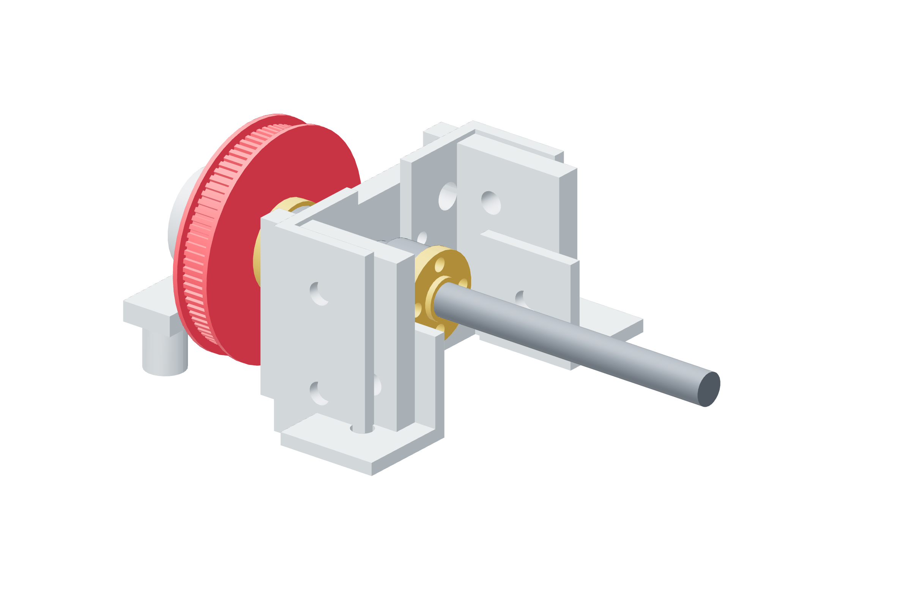

Screw drives / six copies49 / 179
Bolt the pulley to its hub
The rotating metal nut flange is the 80T pulley's hub. Four through-bolts carry the torque; the print does not clamp the threaded screw crest.
AddPer drive: 1 pulley-80t · 4 M3 × 20 · washers and locking nuts
Tools / setup2.5 mm hex · 5.5 mm wrench

- Seat the pulley against the metal flange and align all four holes.
- Start all four M3 × 20 screws before tightening any; tighten in opposite pairs.
- Hold the flange while bringing each nut seated; do not twist the thrust adjustment.
- Turn the screw and watch the pulley flange clear the nearby metal stack for one full turn.
Ready when
All four bolts retain the pulley and neither flange rubs the bulkhead or a stationary bracket. Rubbing is an axial-placement error. Correct the metal stack or pulley seat; do not abrade a flange to make room.